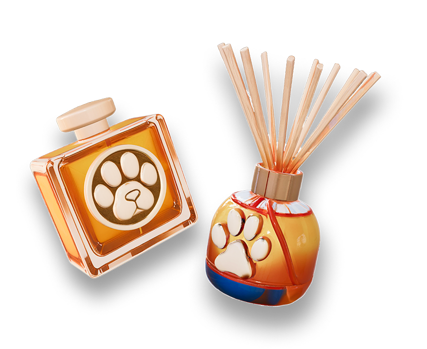
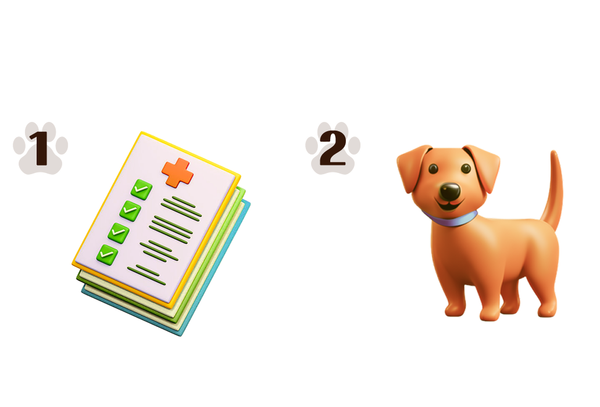
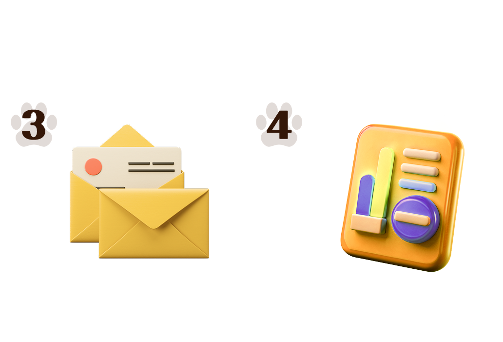

마음이 편안해지는 우리집 강아지 발냄새...
강아지가 없을 때도 맡고 싶다면?
본가를 떠나 자취방에 갔는데 우리집 강아지가 너무 보고싶을 때
심신의 안정을 위하여 집 안 전체에 향기로운 강아지 발냄새가 필요할 때
강아지가 없는 여행을 떠났는데 내가 분리불안이 올 때
강아지와 함께하는 느낌을 받고 싶은 언제 어디서든

강아지 발냄새 향수 & 디퓨저와
함께해보세요!
제각기 다른 체취에 맞춘
특별한 개스널 맞춤 제작
강아지들은 제각기 다른 체취를 가지고 있기 때문에 발냄새 역시 강아지마다 조금씩 다른, 고유의 향을
가집니다. 아이들을 사랑하는 견주들은 이 차이를 못 알아챌 수가 없죠. 다른 강아지말고, 오직 ‘우리 집’
강아지 ‘별이’, ‘뽀또’의 발냄새를 맡고 싶은 견주들을 위해 발냄새 향수 & 디퓨저는 체취 분석 키트를
통하여 개스널 맞춤형 향수와 디퓨저를 제공합니다.
맞춤 제작 향수 & 디퓨저 주문 과정
 
* 키트 신청서 예시
사고는 싶은데, 제작 과정도 귀찮고
제작 과정도 귀찮으면 어떡하죠?
가장 일반적인 강아지 발냄새를 구현한
'Paw Scent 01'
오천명 견주들의
검증을 받은
높은 싱크로율
'Paw Scent 01'
노트
실제 구매자 분들이 남겨주신
생생한 후기